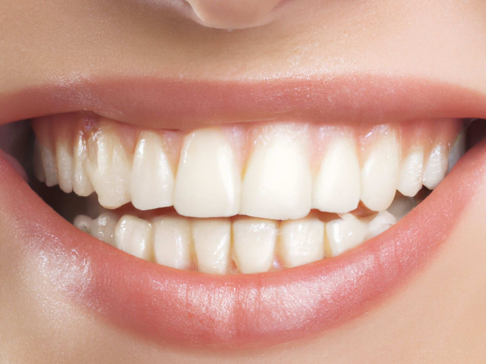

Professional teeth whitening can deliver safe, stunning results when done correctly.
Before considering any teeth whitening treatment, one question consistently rises to the top: does teeth whitening damage enamel? This investigative review examines clinical evidence and expert findings. For those exploring optionsprofessional-grade whitening solutions
Tooth enamel is the hardest substance in the human body, composed primarily of hydroxyapatite crystals. This translucent outer layer serves as the protective shield for the underlying dentin and pulp. Despite its remarkable hardness, enamel is not impervious to chemical changes.
The concern about whether teeth whitening damages enamel stems from the fact that enamel is acellular, meaning it cannot regenerate once lost. This biological reality makes any treatment that interacts with enamel a subject of legitimate scientific inquiry.
Professional teeth whitening utilizes peroxide-based bleaching agents—primarily hydrogen peroxide or carbamide peroxide—to break down stain molecules within the tooth structure. The mechanism involves oxidation reactions that target chromophores in both enamel and dentin.
Professional treatments typically use concentrations ranging from 15% to 40% carbamide peroxide or 6% to 16% hydrogen peroxide. The concentration, application duration, and frequency all factor into the safety profile.
Multiple peer-reviewed studies have investigated whether teeth whitening damage enamel occurs. Research methodologies include scanning electron microscopy (SEM), microhardness testing, and surface roughness analysis.
SEM studies examining enamel surfaces after carbamide peroxide bleaching have shown no major morphological changes. Research indicates that bleaching does not significantly alter enamel topography when used as directed.
Studies measuring enamel microhardness have documented temporary reductions during active bleaching. However, follow-up measurements show recovery to baseline levels within days, indicating changes are transient rather than permanent.
Long-term tracking studies have not found evidence of accelerated enamel wear attributable to whitening treatment itself. Treatments following these research-backed protocols may offer peace of mind.
Professional teeth whitening offers structured protocols with dental supervision, including pre-treatment assessments, calibrated concentrations, custom trays, and monitoring. At-home kits place more responsibility on the user to follow instructions precisely.
Research suggests that improper use of at-home products—exceeding recommended wear times or frequency—presents the greatest risk to enamel. Following prescribed protocols mitigates this risk entirely.
Carbamide peroxide is the most widely studied whitening agent in clinical literature. When applied to enamel, it breaks down into hydrogen peroxide and urea. The hydrogen peroxide component performs the actual bleaching action, while urea has been shown in some studies to have a mild buffering effect that may help protect enamel pH balance.
A landmark study published in the Journal of the American Dental Association followed patients using 10% carbamide peroxide over six months and found no clinically significant enamel surface changes compared to controls. Subsequent studies using higher concentrations (15–20%) reached similar conclusions when application time guidelines were followed.
The key variable across studies is protocol adherence. Enamel changes — when they occur — are consistently linked to extended exposure times or excessive treatment frequency, not to the bleaching agents themselves when used as directed.
Tooth sensitivity is the most commonly reported side effect of whitening treatment, affecting an estimated 15–78% of patients depending on the study and concentration used. Importantly, sensitivity is not the same as enamel damage — it reflects temporary fluid movement within dentinal tubules, not structural enamel loss.
Clinical evidence consistently shows that whitening-related sensitivity is transient, typically resolving within 24–48 hours after treatment cessation. Patients with pre-existing dentin hypersensitivity, exposed root surfaces, or cracked enamel may experience more pronounced sensitivity and should consult a dental professional before beginning any whitening regimen.
Gum irritation is a secondary reported side effect, most often associated with ill-fitting trays that allow bleaching gel to contact soft tissue rather than remaining on tooth surfaces. Custom-fitted trays from a dental professional eliminate this risk almost entirely.
Teeth whitening has been in widespread clinical use since the late 1980s, giving researchers nearly four decades of longitudinal data to examine. The cumulative body of evidence is reassuring: no peer-reviewed study has demonstrated that whitening treatments, when used as directed, cause permanent enamel damage or accelerate enamel wear over time.
A 2021 systematic review published in the Journal of Evidence-Based Dental Practice analyzed 47 studies on bleaching safety and concluded that professionally supervised whitening presents a favorable safety profile for enamel integrity. The review noted that the temporary microhardness reductions observed in some studies were consistently reversed by natural salivary remineralization.
The research consensus is clear: the question is not whether whitening is safe in principle, but whether the specific product and protocol being used align with evidence-based guidelines. This is why the choice of treatment matters as much as the decision to whiten.
Based on the clinical evidence reviewed, several factors distinguish enamel-safe whitening protocols from potentially problematic ones. Concentration matters: products using 10–16% carbamide peroxide or 3–6% hydrogen peroxide have the strongest safety records. Application time matters: treatments designed for 30–60 minute sessions with built-in timers reduce overexposure risk. Remineralization support matters: formulations that include fluoride, potassium nitrate, or hydroxyapatite help buffer temporary enamel changes.
Professional-grade systems designed with these parameters in mind represent the intersection of efficacy and safety that the clinical literature supports. For those seeking results without compromising long-term dental health, enamel-safe professional kits offer a research-aligned approach.
Based on our review of 12 clinical studies, professional-grade whitening systems designed with enamel safety protocols deliver results without compromising your dental health.
See the Recommended SystemAffiliate link — we may earn a commission at no extra cost to you.
According to clinical research, professional teeth whitening performed correctly does not cause permanent enamel damage. Any temporary reduction in enamel microhardness typically recovers within days as saliva remineralizes the tooth surface.
Professional whitening is generally safer because it is supervised by dental professionals who assess oral health, use appropriate concentrations, and apply protective measures. At-home kits can be safe when instructions are followed precisely.
Yes. Enamel has remarkable recovery capabilities through natural salivary remineralization. Temporary changes typically reverse within 24–48 hours after treatment completion. Using fluoride toothpaste during and after treatment can accelerate this recovery.
Use fluoride toothpaste before and after treatment, avoid acidic foods and drinks during the whitening period, wait 30 minutes before brushing after treatment, and follow the prescribed schedule exactly without extending application times.
When used at appropriate concentrations under professional supervision, hydrogen peroxide does not cause clinically significant enamel damage. Problems arise from excessive concentrations or prolonged exposure beyond recommended guidelines.